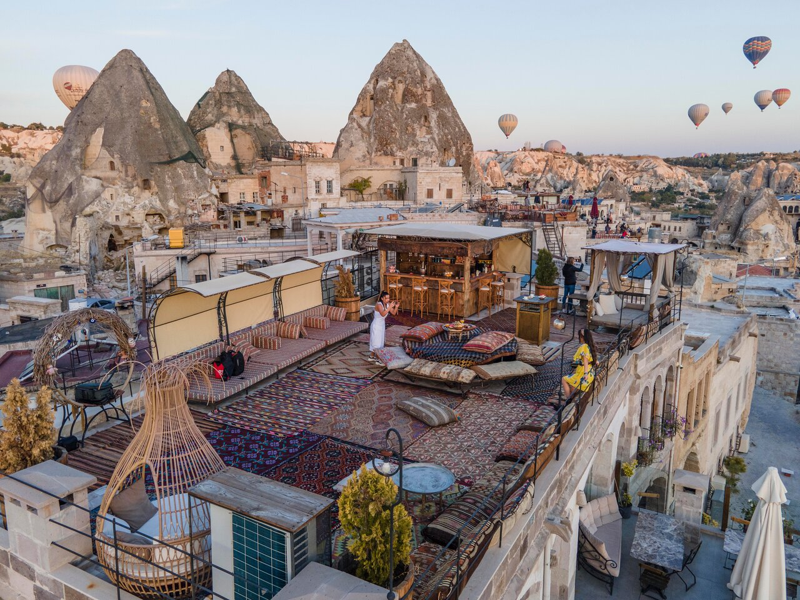
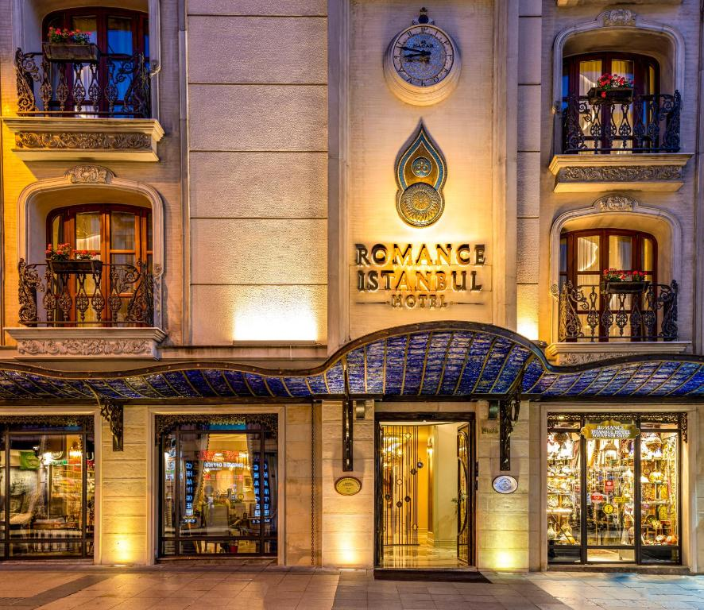
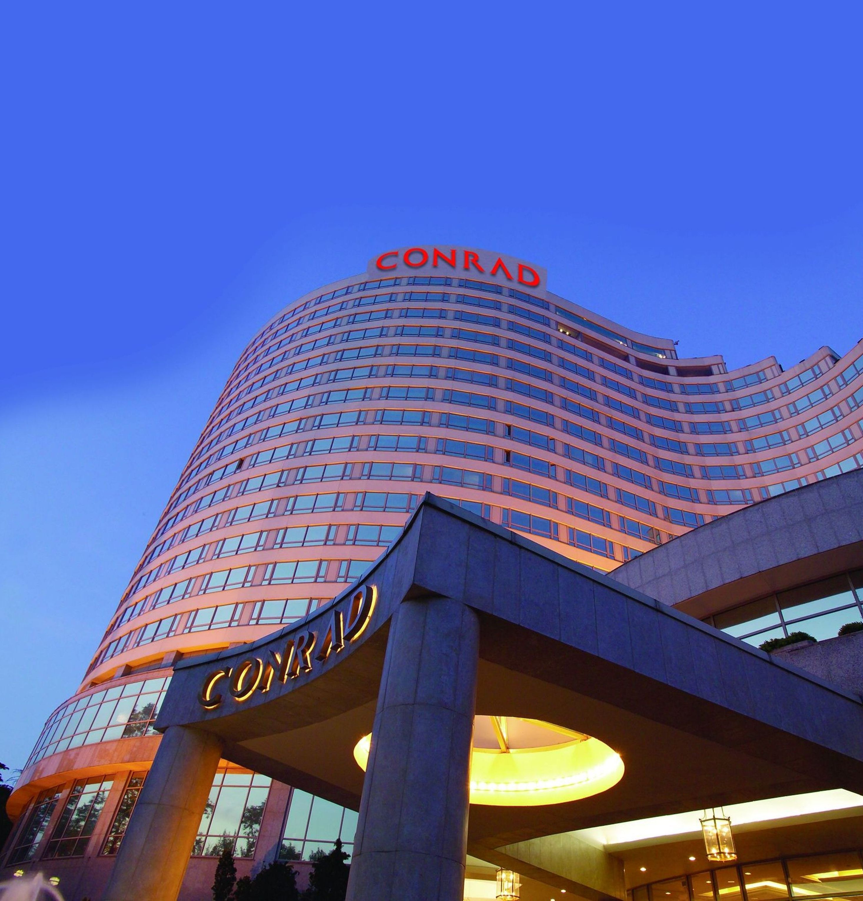
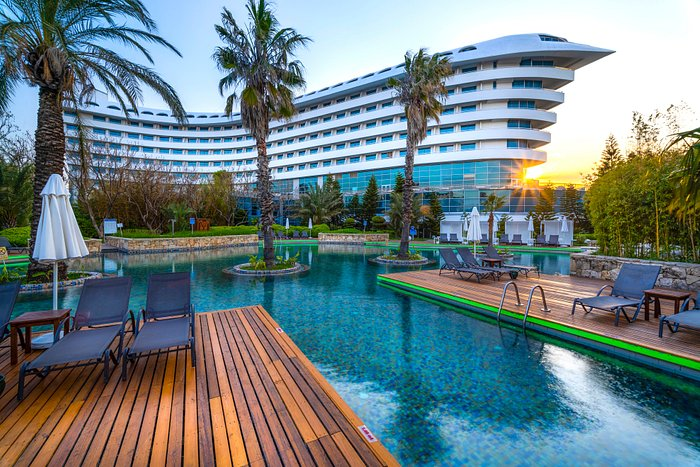
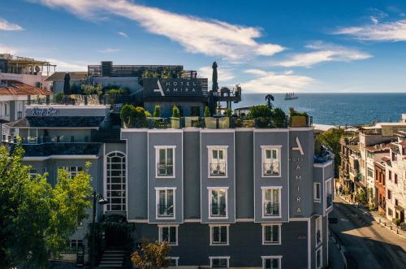

Turkey Best Hotels
HOTEL'S DETAILS

Divan Cave Hotel
The hotel is made up of ancient limestone walls and pathways connecting pretty terraces and leading into the snug rock-cut, grotto-like rooms typical of these dwellings. Being a family-run business, guests are treated to a particularly warm welcome by staff who put an emphasis on hospitable service.
- Price Range: ₺6000-₺7500
- Free Wifi
- Free Parking
- Taking Safety Measures
- Special Offer
- Aydınlı Mah, Görçeli Sk. No : 5, 50180 Göreme/Nevşehir Merkez/Nevşehir, Turkey

Romance Istanbul Hotel
In the Romance Istanbul Hotel, we offer you the opportunity to witness the history and elegance of the Ottoman Empire with the talismanic shirts that had a great importance in the Ottoman Sultans’ lives. Each story will bring you back to the magical past while you explore the myths of the talisman.
- Price Range: ₺1500-₺2000
- Free Wifi
- Taking Safety Measures
- Hoca Paşa, Hüdavendigar Cd. No:5, 34110 Fatih/İstanbul, Turkey

Conrad Istanbul Bosphorus
Conrad Istanbul Bosphorus, is the only property of Conrad Hotels & Resorts in Turkey which is one of the best-known luxury hospitality brands in the world. Opened in 1992, and located in the European side of the city, the hotel was designed in a luxury style to respond to the expectations of both the discerning business and leisure travellers. Conrad Istanbul Bosphorus boasts totally new restaurants and bar where the finest dining and drinks are to be savoured along with awe-inspiring views of the city skyline and the Bosphorus Strait.
- Price Range: ₺2500-₺3200
- Free Wifi
- Free Parking
- Taking Safety Measures
- Special Offer
- Cihannüma, Saray Cd No:5, 34353 Beşiktaş/İstanbul, Turkey

Concorde De Luxe Resort
Concorde De Luxe Resort is a five star hotel in Lara, Antalya, Turkey. It won the "Europe's All-inclusive Resort", the "Turkey's All-inclusive Resort" and the "Turkey's Leading Spa Resort" awards in 2008
- Price Range: ₺3000-₺3600
- Free Wifi
- Free Parking
- Taking Safety Measures
- Special Offer
- Güzeloba, Site, Tesisler Cd No:358 D:1, 07980 Aksu/Antalya, Turkey

Hotel Amira Istanbul
This family-run boutique hotel is located just four blocks away from Istanbul's famous Blue Mosque, Sultanahmet Square and its surrounding attractions. Two historic Victorian corner homes were rebuilt from scratch, copying the original architectural design and as many of the interiors as possible.
- Price Range: ₺5500-₺7000
- Free Wifi
- Restaurant
- Taking Safety Measures
- Küçük Ayasofya Mahallesi, Mustafa Paşa Sk. No:43, 34122 Fatih/İstanbul, Turkey
- © 2022 - 2023 Turkishan Travels, all rights reserved.